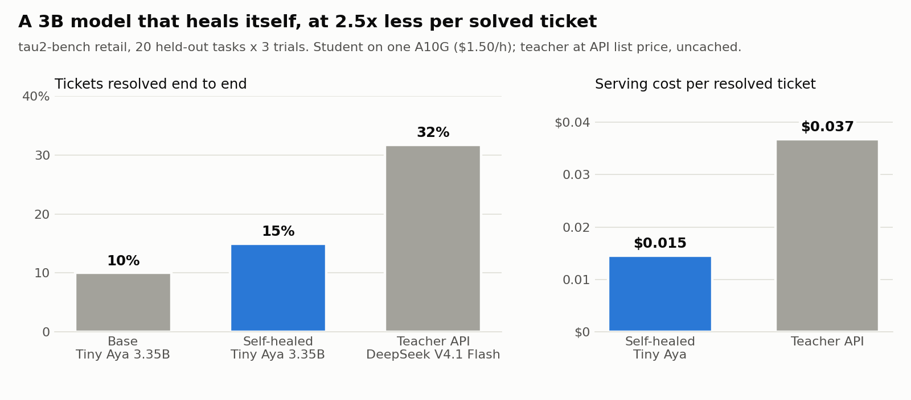
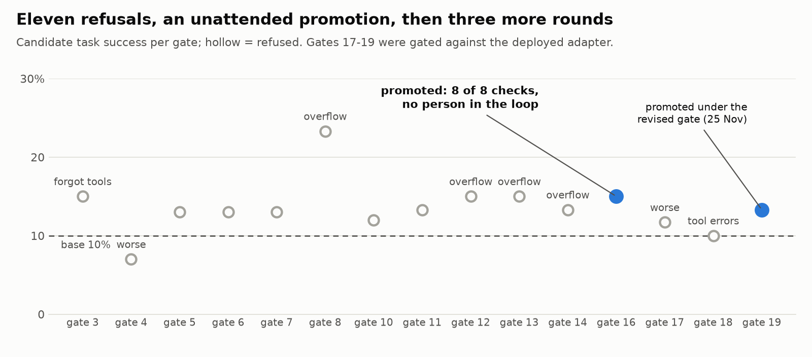
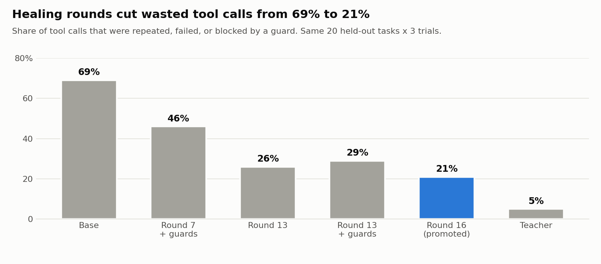

Self-healing on a $1.50-an-hour GPU
Shipwright is a 3.35B Tiny Aya support agent that finds its own failures, has a teacher correct them, retrains, and redeploys only when an 8-check gate measures an improvement. On 15 November it ran that loop end to end with no person in it: one command, a $4 cap, 2 hours 24 minutes.

Why the smallest model. We chose Tiny Aya on purpose: it fits the budget, serves on a $1.50-an-hour A10G, and is the model where self-healing matters most, because it fails most. Its 8,192-token window is the limit our gate kept catching, and Aya Expanse 32B is the first thing we would run with more credit.
Three models
| Role | Model | Tickets solved |
|---|---|---|
| Base | Tiny Aya Global 3.35B, unchanged | 10% |
| Student, what the loop deploys | Tiny Aya + a LoRA adapter (under 1% of the model) | 15% |
| Teacher, never deployed | DeepSeek V4.1 Flash (API) | 32% |
The benchmark is tau2-bench retail: a simulated customer, 16 shop tools, a written policy, and a grader that checks whether the shop database ends up right, not whether the reply sounded right.
The loop

- Run the student on training tasks; every turn's raw output is logged.
- Detect failures with tau2's grader and AgentTune's
FailureDetector. - Classify and route with AgentTune's
FailureClassifier: tool fault → tool fix, model fault → weight fix, environment fault → no fix, never trained on. - Correct: at every turn where the student went wrong, the teacher answers from the student's exact context.
- Train a fresh adapter with AgentTune's
create_distill_trainer. - Gate on 8 checks: AuditKIT pass^1 and pass^k, targeted failures down, no new failure kind, BFCL (no forgetting) and AgentTune's
DeploymentGate. - Promote or keep the old one, recorded in a ledger with rollback.
A gate that can say no
It refused 11 times before it said yes, each time for a reason we could trace: forgetting general tool use, new failure kinds, conversations overflowing the 8K window. AgentTune's own DeploymentGate would have approved ten of the eleven candidates ours refused.

What the student stopped doing
| Per 60 conversations | Base | Self-healed |
|---|---|---|
| Invented an order or item id | 40 | 0 |
| Handed off to a human too early | 11 | 0 |
| Made up an answer | 8 | 0 |
| Tool-call error rate | 44% | 6% |
| BFCL, general tool calling | 45 | 73 |
Leaner conversations
tau2 stores the calls an expert makes for every task. Comparing each conversation with that path, wasted calls (repeated, failed or blocked by a guard) fell from 69% to 21%. Round 7 needed a guard to block 4.3 bad calls per conversation; round 16 needs 1.3. The guards' lessons moved into the weights.

For a business
Running the self-healed student instead of the teacher's API costs about $22 instead of $117 per 10,000 conversations, with every conversation on hardware the shop controls. It resolves 15% of tickets end to end against the teacher's 32%, so today it is a first-line agent that never invents an order id and hands the rest to people. Each unattended healing round costs about $4.
Honest limits
- Three more passes in 60 conversations is not significant on its own. Pooled over three gates the round 7 adapter solved 17.2% vs 10% (13 paired wins, 0 losses), and 10% vs 0% on 20 hidden tasks opened once.
- Tasks that need two or more changes stay unsolved; the 8K window is the wall.
- A student that acts more errs more: 13% of its conversations made a wrong change, against 3% for the base, which mostly gives up, and 10% for the teacher.